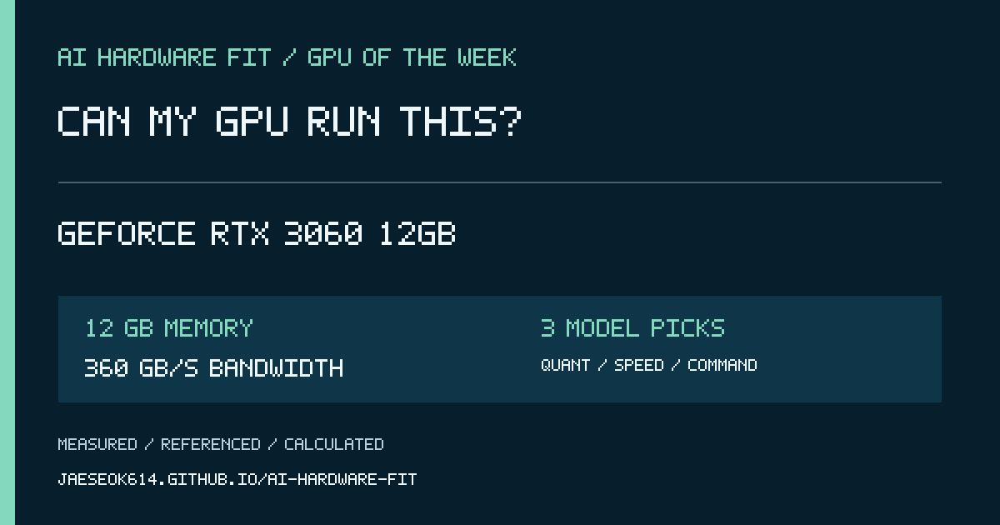

AI HARDWARE FIT · 2026-10-05
Can my GPU run this?
GeForce RTX 4060 Ti 16GB

16 GB memory · 288 GB/s memory bandwidth
Speed is a planning range. Open the result to see whether it is measured, calibrated, referenced, or calculated.